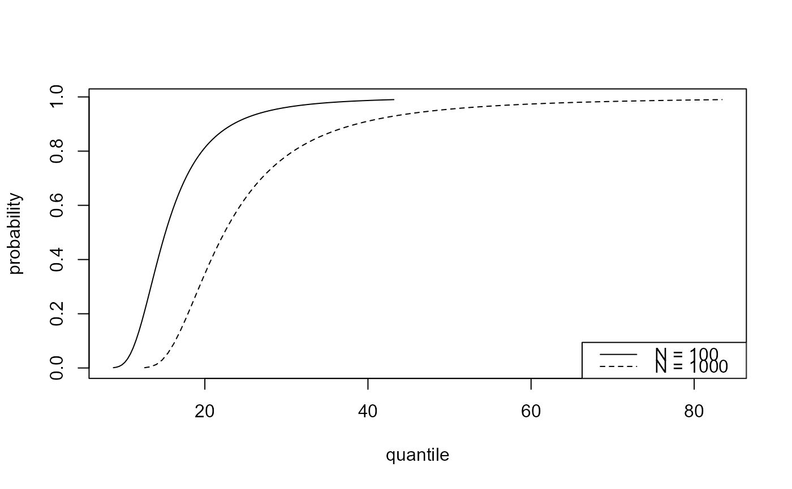
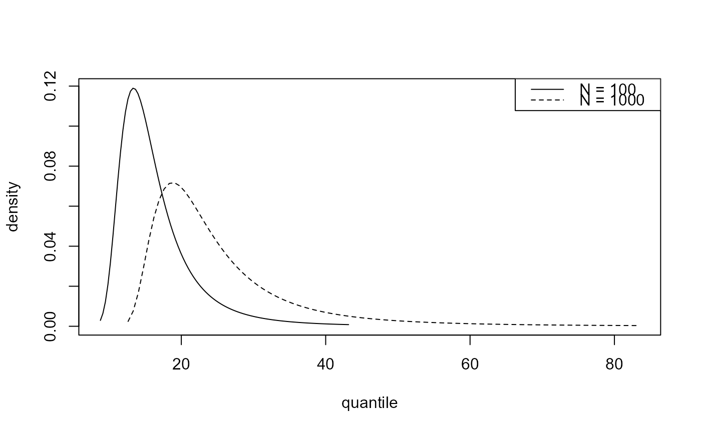
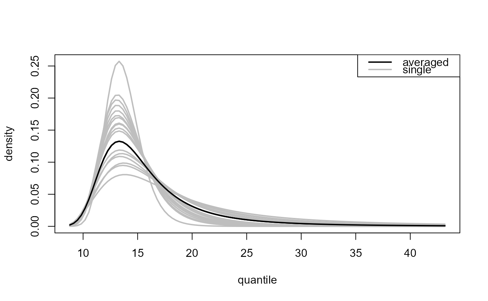
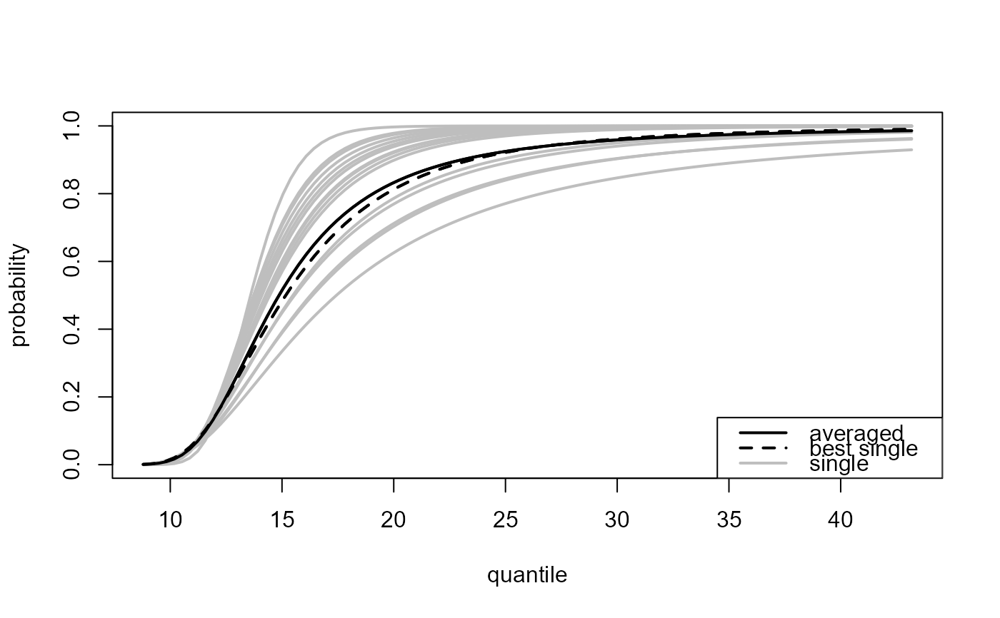
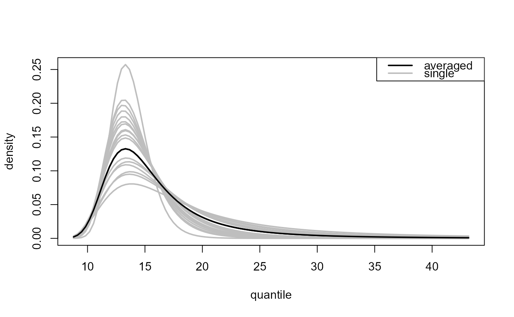
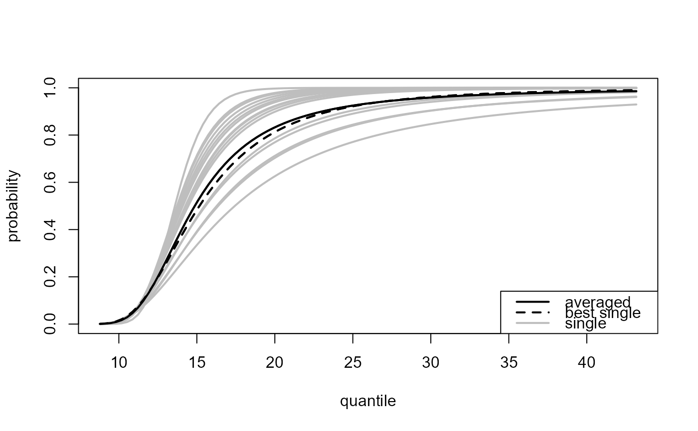

plot method for class "ithreshpred". Produces plots to
summarise the predictive inferences made by predict.ithresh.
# S3 method for class 'ithreshpred'
plot(x, ..., ave_only = FALSE, add_best = FALSE)Arguments
- x
an object of class
"ithreshpred", a result of a call toithresh.- ...
Additional arguments passed on to
plot.evpred.- ave_only
A logical scalar. Only relevant if
predict.ithreshwas called withwhich_u = "all". IfTRUEthen plot only a curve for the weighted average over multiple training thresholds. IfFALSEthen also plot a curve for each training threshold.- add_best
A logical scalar. If
TRUEthen the best threshold, as judged using the validation threshold selected using the argumentwhich_vsupplied topredict.ithresh, is highlighted by plotting it with a different line style.
Value
A list containing the graphical parameters using in producing the plot including any arguments supplied via ... is returned (invisibly).
Details
Single threshold case, where
predict.ithresh was called with numeric scalar
which_u or which_u = "best".
plot.evpred is called to produce the plot.
Multiple threshold case, where
predict.ithresh was called with which_u = "all".
Again, plot.evpred is called but now the
estimated predictive distribution function (type = "p" used
in the call to predict.ithresh) or density function
(type = "d") is plotted for each of the training thresholds
(grey lines) as is the result of the weighted average over the
different training thresholds (black line).
If graphical parameters, such as lty, lwd or col
are passed via ... then the first element relates to the
weighted average and the remaining length(x$u_vec) elements to
the respective training thresholds in u_vec.
See also
ithresh for threshold selection in the i.i.d. case
based on leave-one-out cross-validation.
predict.ithresh for predictive inference for the
largest value observed in N years.
plot.ithresh for the S3 plot method for objects of
class ithresh.
summary.ithresh Summarizing measures of threshold
predictive performance.
Examples
u_vec_gom <- quantile(gom, probs = seq(0, 0.9, by = 0.05))
gom_cv <- ithresh(data = gom, u_vec = u_vec_gom, n_v = 3)
# Note: gom_cv$npy contains the correct value of npy (it was set in the
# call to ithresh, via attr(gom, "npy").
# If object$npy doesn't exist then the argument npy must be supplied
# in the call to predict().
### Best training threshold based on the lowest validation threshold
# Predictive distribution function
npy_gom <- length(gom)/105
best_p <- predict(gom_cv, n_years = c(100, 1000))
plot(best_p)

# Predictive density function
best_d <- predict(gom_cv, type = "d", n_years = c(100, 1000))
plot(best_d)

### All thresholds plus weighted average of inferences over all thresholds
# Predictive distribution function
all_p <- predict(gom_cv, which_u = "all")
plot(all_p)
 # Predictive density function
all_d <- predict(gom_cv, which_u = "all", type = "d")
plot(all_d)

### ... and highlight the best threshold
plot(all_p, add_best = TRUE)

plot(all_d, add_best = TRUE)
# Predictive density function
all_d <- predict(gom_cv, which_u = "all", type = "d")
plot(all_d)

### ... and highlight the best threshold
plot(all_p, add_best = TRUE)

plot(all_d, add_best = TRUE)